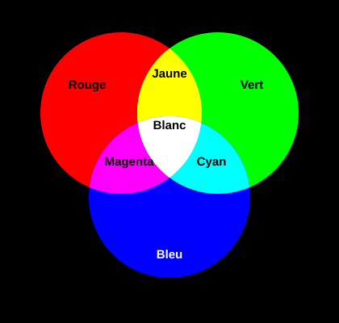
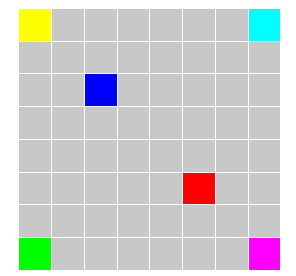

🕵️♂️ Mission : Opération Pixel Rescue¶
Agent, bienvenue dans la Pixel Force.
Une cyber-attaque a corrompu les banques d'images du serveur central. Les couleurs sont déréglées, les pixels sont en désordre et nos mascottes ressemblent à de la bouillie numérique.
Votre objectif :
- Recalibrer les capteurs de couleurs (RGB).
- Manipuler la grille matricielle.
- Restaurer l'avatar corrompu "Toad".
À chaque étape validée, vous débloquerez un Badge de Compétence.
# 🛠️ Initialisation du système (Exécutez cette cellule en premier)
from autoeval import go, check_couleurs, check_rouge, check_melanges, check_pixel, check_prediction, check_toad
from ipythonblocks import BlockGrid
from _visualisation import dessiner
go()
🌈 Niveau 1 : Le Calibrage des Couleurs¶
Les écrans fonctionnent selon le principe de la Synthèse Additive. Ils utilisent trois lumières de base pour tromper notre oeil et créer toutes les autres couleurs : Rouge (Red), Vert (Green), et Bleu (Blue). C'est le système RVB (ou RGB).
L'absence de lumière donne du Noir. La puissance maximale de toutes les lumières donne du Blanc.

📝 Défi 1 : Analyse spectrale¶
Regardez le schéma ci-dessus et remplissez les variables ci-dessous pour configurer le système.
# Remplissez les guillemets avec les noms des couleurs (ex: "rouge et vert")
rep_jaune = "..." # Quelles couleurs donnent le jaune ?
rep_magenta = "..." # Quelles couleurs donnent le magenta ?
rep_cyan = "..." # Quelles couleurs donnent le cyan ?
rep_total = "..." # Quelle couleur obtient-on avec Rouge + Vert + Bleu ?
# Validation de la réponse
check_couleurs(rep_jaune, rep_magenta, rep_cyan, rep_total)
🎛️ Niveau 2 : Contrôle d'intensité¶
Chaque canal de couleur (R, G, B) est codé par un nombre entre 0 (éteint) et 255 (intensité max).
Nous allons utiliser le module BlockGrid pour allumer des pixels.
La commande BlockGrid(8, 8, fill=(R, G, B)) crée une grille de 8x8 pixels remplie avec la couleur définie.
# TEST : Création d'une grille noire (0, 0, 0)
R = 0
G = 0
B = 0
BlockGrid(8, 8, block_size=30, fill=(R, G, B))
📝 Défi 2 : Allumer le Rouge¶
Modifiez les variables ci-dessous pour obtenir un Rouge Pur (Red au max, les autres à 0).
Astuce : Pour vous aider a trouver le code RGB des couleurs vous pouvez utiliser le site https://htmlcolorcodes.com/
# Modifiez ces valeurs
R = 0
G = 0
B = 0
# Affichage et validation
grid = BlockGrid(8, 8, block_size=30, fill=(R, G, B))
check_rouge(R, G, B)
grid
📝 Défi 3 : La chimie des couleurs¶
Trouvez les codes numériques pour créer les couleurs secondaires (il vous faudra changer les valeurs des variables). Aidez-vous du Défi 1 !
# 1. Pour faire du JAUNE (Rouge + Vert)
R_jaune = 0
G_jaune = 0
B_jaune = 0
# 2. Pour faire du MAGENTA (Rouge + Bleu)
R_mag = 0
G_mag = 0
B_mag = 0
# 3. Pour faire du CYAN (Vert + Bleu)
R_cyan = 0
G_cyan = 0
B_cyan = 0
# Validation globale
check_melanges(R_jaune, G_jaune, B_jaune, R_mag, G_mag, B_mag, R_cyan, G_cyan, B_cyan)
🧠 Réflexion rapide¶
Si chaque couleur peut avoir une valeur entre 0 et 255 (donc 256 possibilités), combien de couleurs totales un ordinateur peut-il afficher ? Indice : C'est 256 × 256 × 256... cela fait plus de 16 millions !
🎯 Niveau 3 : Ciblage de Pixel¶
Une image est un tableau (une grille). Pour modifier un pixel précis, on utilise ses coordonnées [ligne, colonne].
⚠️ Attention : En informatique, on commence souvent à compter à partir de 0 !
- Le pixel tout en haut à gauche est
[0, 0]. - Le pixel tout en bas à droite (sur une grille 8x8) est
[7, 7].
📝 Défi 4 : Tir de précision¶
Activez le pixel en haut à gauche [0, 0] en ROUGE.
grille = BlockGrid(8, 8, block_size=30)
# Modifiez la ligne ci-dessous pour mettre du ROUGE (255, 0, 0)
grille[0, 0] = (0, 0, 0)
# Validation
check_pixel(grille)
grille
📝 Défi 5 : Encodage de matrice¶
Un virus a corrompu une image on souhaite la recrée. Ecrit un code source permettant de générer l'image ci-dessous.

# Completer le code ici :
grille = BlockGrid(8, 8, block_size=30, fill=(200, 200, 200)) # Fond gris clair
grille[2, 2] = (0, 0, 255) # ?
...
# Validation
try:
check_prediction(grille)
grille.show()
except:
print("Code non exécuté ou variable 'grille' manquante.")
👾 Niveau Final : Le Boss "Toad"¶
Pour dessiner une image complexe sans écrire 64 lignes de code, nous utilisons une Matrice (une liste de listes).
Voici l'image originale de Toad : [image non reprise dans cette copie]
⚔️ Défi Ultime : Restauration de Toad¶
Nous avons préparé la palette de couleurs. Vous devez remplir la matrice image_toad pour recréer le personnage pixel par pixel.
Astuce : Chaque ligne de la liste correspond à une ligne de l'image (de haut en bas).
# 🎨 Palette de couleurs
b = ... # Blanc
n = ... # Noir
v = (50, 200, 50) # Vert (pour d'autres dessins)
ch = (255, 220, 180) # Chair (Beige)
# 🖌️ À vous de remplir la matrice (12 lignes, 12 colonnes)
# Remplacez les '...' par les variables de couleur (f, b, r, n, ch)
# Regardez bien l'image modèle !
image_toad = [
[..., ..., ..., ..., ..., ..., ..., ..., ..., ..., ..., ...], # Ligne 0 : Haut du chapeau
[..., ..., ..., ..., ..., ..., ..., ..., ..., ..., ..., ...] # Ligne 1
[..., ..., ..., ..., ..., ..., ..., ..., ..., ..., ..., ...], # ... continuez ...
[..., ..., ..., ..., ..., ..., ..., ..., ..., ..., ..., ...],
[..., ..., ..., ..., ..., ..., ..., ..., ..., ..., ..., ...],
[..., ..., ..., ..., ..., ..., ..., ..., ..., ..., ..., ...],
[..., ..., ..., ..., ..., ..., ..., ..., ..., ..., ..., ...],
[..., ..., ..., ..., ..., ..., ..., ..., ..., ..., ..., ...],
[..., ..., ..., ..., ..., ..., ..., ..., ..., ..., ..., ...], # Attention aux yeux (n)
[..., ..., ..., ..., ..., ..., ..., ..., ..., ..., ..., ...],
[..., ..., ..., ..., ..., ..., ..., ..., ..., ..., ..., ...],
[..., ..., ..., ..., ..., ..., ..., ..., ..., ..., ..., ...]
]
# Validation et Affichage
if check_toad(image_toad):
# Utilisation de la fonction dessiner (fournie dans _visualisation.py)
dessin = dessiner(image_toad)
dessin.show()
🎉 Mission Accomplie !¶
Vous avez compris comment les ordinateurs stockent les images : une grille de nombres représentant des mélanges de Rouge, Vert et Bleu.
Vous pouvez maintenant créer vos propres Pixel Arts !
[BONUS]¶
Bravo Agent ! En manipulant la matrice, vous avez débloqué un nouveau grade.
Votre réputation grandit au sein de la Pixel Force. Des clients extérieurs commencent à nous envoyer des commandes spécifiques.
Voici trois bons de commande que vous devez honorer pour prouver votre maîtrise des boucles et des coordonnées.
📦 Commande n°1 : Le "Slash"¶
Client : Start-up "Slash & Co"
Demande : "Nous voulons une ligne verte qui monte, du bas-gauche vers le haut-droit."
Indice technique : Quand la ligne i augmente (0, 1, 2...), la colonne doit diminuer (7, 6, 5...).
grille = BlockGrid(20, 20, block_size=30, fill=(200, 200, 200)) # Fond gris clair
v = (50, 200, 50)
for i in range(20):
...
# Validation
try:
check_slash(grille)
grille.show()
except:
print("Code non exécuté ou variable 'grille' manquante.")
📦 Commande n°2 : Le "X-Men"¶
Client : Professeur Xavier
Demande : "Il nous faut une croix parfaite pour notre logo. Elle doit traverser l'image de part en part."
Indice technique : Dans la même boucle, vous pouvez colorier deux pixels différents : la diagonale normale (i, i) et l'anti-diagonale (i, 7-i).
grille = BlockGrid(20, 20, block_size=30, fill=(200, 200, 200)) # Fond gris clair
v = (50, 200, 50)
for i in range(...):
# La diagonale descendante
...
# L'anti-diagonale
...
# Validation
try:
check_Xmen(grille)
grille.show()
except:
print("Code non exécuté ou variable 'grille' manquante.")
📦 Commande n°3 : L'Hypnose (La Spirale) [BOSS]¶
Client : Le Magicien Mysterio
Demande : "Je veux une spirale qui part de l'extérieur et tourne vers le centre jusqu'à remplir l'espace."
Indice technique : C'est un défi complexe ! Il faut réduire la zone de dessin petit à petit. On dessine le bord haut, puis le bord droit, puis le bas, puis le gauche, et on recommence en resserrant les murs
grille = BlockGrid(100, 100, block_size=30, fill=(200, 200, 200))
v = (50, 200, 50) # Vert
# On définit les murs (limites) de notre spirale